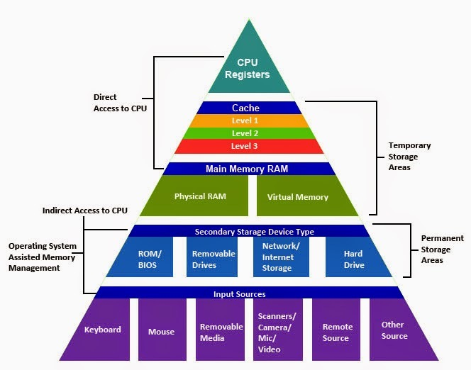
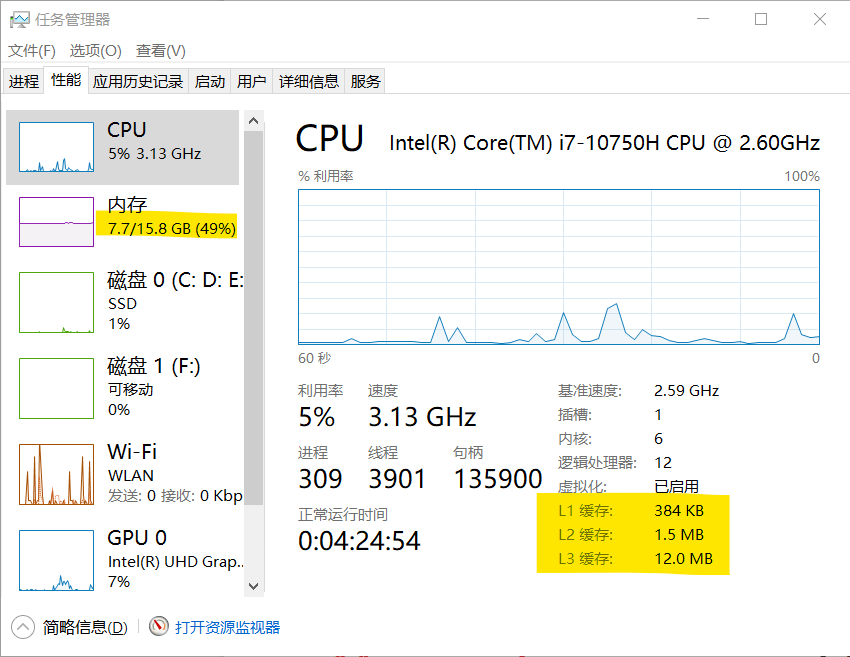
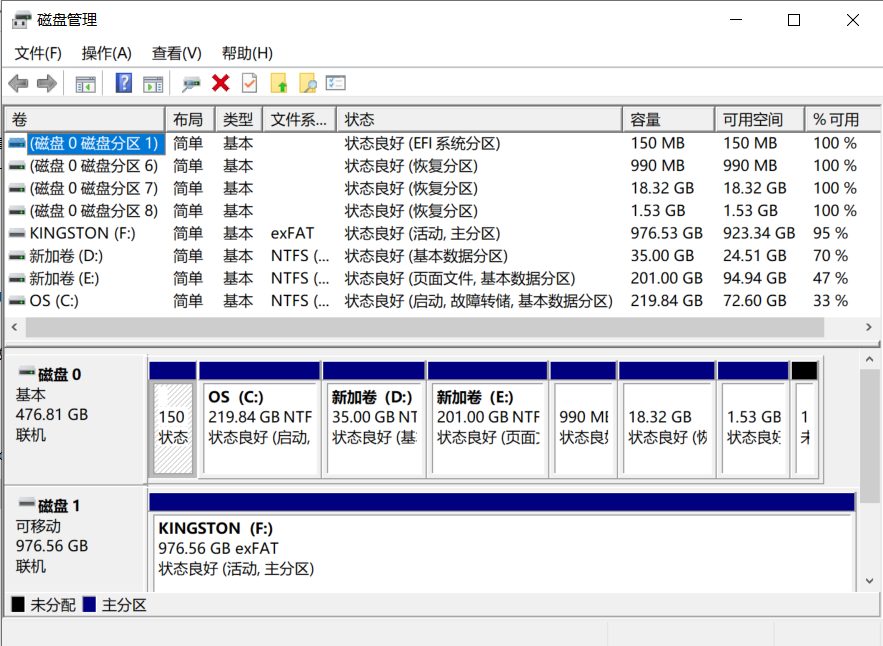
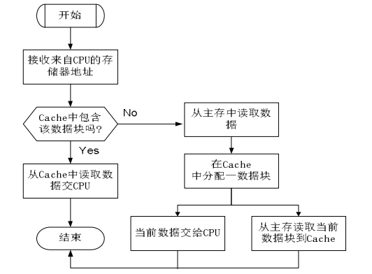
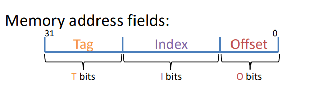
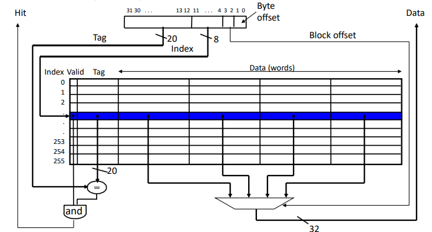
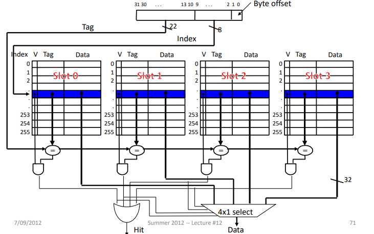
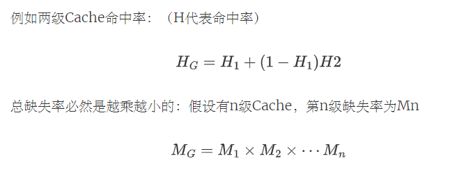
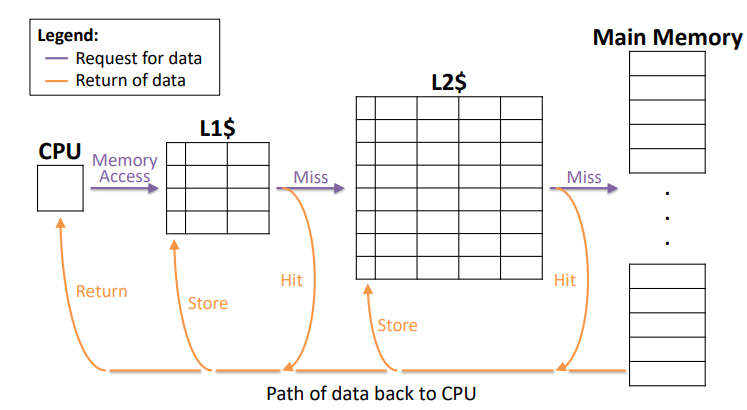

前言
缓慢更新中……
刚开始学计组时，可真是觉得乱花渐欲迷人眼，很快就陷入诸如CMOS晶体管、触发器、刷新、流水线……这些新知识中。而学完一遍，却仍觉得一无所知。或许就像学数学重在建立起一套完整的知识体系，而非记牢每一个细枝末节的小定理一样，计算机相关的知识也应当被成体系地学习。而相较于流水线等知识，存储系统天然地具有层次结构，故而我想在这里稍微梳理一遍这一部分的内容。

显而易见，计算机具有存储数据的需求，而这种需求也有严格与宽松之分（正如我对于知识的记忆情况，在马上要考试时，和学完十五年后显然不同）。根据不同的需求水平，我们可以划分出存储层次。它可按照以下几个维度来区分。当然，它们之间关系极为密切。
- 存储容量
- 访问时间 response time
- 价格
显然，受制于价格，访问快的存储器容量必定较小，这就造成了速度的不匹配：假设速度快的CPU执行一次运算所需时间为1单位，而朝速度慢的主存要一次数据却需要10000单位时间，那么CPU就被拖累得没法干活了。而解决方案就是：在快但贵的存储器，和慢而便宜的存储器中间，多加几层不那么快，也不那么贵的存储器作为“缓冲”，称之为Cache（高速缓存）。
这是可行的。因为计算机程序访问数据时，总是倾向于访问邻近的数据（空间局部性），和最近访问过的数据（时间局部性）。那么，我就可以预测“接下来可能访问的数据”，然后把它们放到Cache里，这样，访问时间就被大大缩短了。这就是存储层次的由来。
根据以上规则和功能，存储系统可大致划分为以下几个层次（存储容量以我的笔记本为例）。CPU需要数据时也多按照自上而下的顺序访问。
| 部件 | 存储容量 | 响应速度 | 价格 |
|---|---|---|---|
| CPU寄存器 Reg | B | 1 | 贵 |
| 高速缓存 Cache | KB-MB | 10+ | 较贵 |
| 主存 main memory | GB | 100+ | 稍贵 |
| 辅存（磁盘等） | GB-TB | 100000+ | 便宜 |
从CPU交换数据的角度来看：CPU可以直接与主存（和Cache）交换数据，但不能直接与辅存交换数据。而主存和辅存之间的数据交换由操作系统和硬件共同完成。有一些教科书采用了“三级存储系统”这个概念，多指Cache、主存、辅存，是一个笼统的概括。
简要概括如下：
- registers - memory
- By compiler (or assembly level programmer)
- cache - main memory
- By the cache controller hardware
- main memory - disks (secondary storage)
- By the OS (virtual memory)
- Virtual to physical address mapping assisted by the hardware (快表TLB)
- By the programmer (files)


接下来，我就按照以上层次进行梳理。
存储层次
CPU寄存器
这一部分主要参考了Digital Design and Computer Architecture一书和部分课设教程，以MIPS体系结构为基础（后续或许补充其他）。
现代CPU的执行速度非常快（例如上图我的笔记本就达到了2.6GHz），而指令的快速执行以快速访问操作数为基础。因此，CPU寄存器便为快速读取而设计——它的容量少、速度高、价格高。（从少量几个寄存器里读数据，自然比从许多个里读要快）
CPU寄存器是CPU的组成部分之一，它可以用来暂存指令、地址、数据等。不同的寄存器有不同的用处，多数计算机具有以下几类：
- 通用寄存器：保存变量和临时结果。
- 程序计数器：保存将要取出的下一条指令的内存地址。指令取出后，程序计数器就被更新，以指向后续的指令。
- 堆栈指针：指向内存中当前栈的顶端。
- 程序状态字：包含了条件码位、CPU优先级、模式（用户态和内核态），以及其他各种控制位。在系统调用和I/O中有重要作用。
下面以MIPS体系结构为例：
通用寄存器
| Registers | Name | Usage |
|---|---|---|
$0 |
$zero |
常量 0 |
$1 |
$at |
保留给汇编器使用 |
$2 ~ $3 |
$v0 ~ $v1 |
函数调用返回值 |
$4 ~ $7 |
$a0 ~ $a3 |
函数调用参数 |
$8 ~ $15 |
$t0 ~ $t7 |
临时变量 |
$16 ~ $23 |
$s0 ~ $s7 |
需要保存的变量 |
$24 ~ $25 |
$t8 ~ $t9 |
临时变量 |
$26 ~ $27 |
$k0 ~ $k1 |
给操作系统使用 |
$28 |
$gp |
全局指针 |
$29 |
$sp |
堆栈指针 |
$30 |
$fp |
帧指针 |
$31 |
$ra |
返回地址 |
特殊寄存器
PC(Program Counter)：用于存储当前CPU正在执行的指令在内存中的地址。HI：这个寄存器用于乘除法。用来存放乘法结果的的高32位，或除法的余数。LO：用来存放乘法结果的低32位，或除法的商。
CP0寄存器
CP0是一个系统控制协处理器，主要用到 4 个:
SR：用于系统控制，决定是否允许异常和中断Cause：记录异常和中断的类型EPC：保存异常或中断发生时的PC值，即发送异常或中断时CPU正在执行的指令地址。当处理完成之后，CPU 会根据这个地址返回到正常程序中继续往下执行PRId：处理器ID，用于实现个性的寄存器
Cache
念作Cash（钱！）
这一部分的内容感谢GXP老师的精彩讲解（和他的PPT）
Cache简介
Cache由SRAM实现，速度较快，价格较高，密度较低，耗能较大。SRAM(静态随机存取存储器 Static random access memory)属于易失性存储器，也就是说一掉电就会导致数据丢失。
由于主存的存储速度与CPU的速度不匹配，如果直接访问主存会导致CPU资源的极大浪费，故而在CPU和主存间设置一容量较小的Cache。它存放最活跃的内容。大多数情况下，CPU能直接从这个高速缓存中取得指令和数据，而不必访问主存。

在Cache查找数据时，若找到则称为HIT，没找到则成为MISS。衡量Cache性能的主要指标即为MISS的次数占查找次数的比重，称为Miss Rate。
地址
Cache与主存间以块为单位进行数据交换。除了下面说明的地址分划以外，还可能有标记是否有效的valid位（比如刚刚开机时全都无效），和标记是否修改的dirty位（如果被修改，则跟主存里的数据不一致）。

| Tag | Index/set | Offset |
|---|---|---|
| 组内块地址 | 组地址 | 块内偏移 |
| 当前某一块 Cache 属于主存的哪一块 | 映射到 Cache 的哪一块 | 块内部的索引 |
- 总位数：用主存大小计算
- set位数：Cache大小/组大小
- offset位数：块大小
- tag位数：总位数-set-offset
注1：对于直接映射，组地址和组内块地址合并为Index块地址；对于全相联映射，组地址和组内块地址合并为Tag组内块地址。相当于随着关联度的提升，Tag逐渐蚕食了Set的地盘。
注2：tag不能直接计算的原因或为：总位数和offset位数是从主存得来的，而set位数是由Cache大小决定的，tag是双方妥协的产物，并不是一开始便能计算出的。
注3：我在初学时曾犯的经验主义错误有：我理所应当地将“组”理解为一块连续的空间，而“块”是将“组”分化为几块。但其实“组”代表的映射关系是不连续的，它更像是一种方便的记号，而非实质的划分。事实上，数据的“地址”是一样的，只是在不同地方会人为地进行不同解读，例如Cache的tag在物理存储里或属于物理页号。

Cache映射
Cache其存在即为存储主存内一些频繁访问的数据，故而其与主存间必然存在一种映射关系。根据映射关系的不同，Cache可分为以下三类：
- 直接映射（Direct-Mapped）：某个主存块内存储的内容只能被映射到Cache的特定块。（相当于每块都是一个组）
- 组相联映射（N-way set-associative）：某个主存块内存储的内容被映射到Cache的一些特定块内的任意一块。
- 全相联映射（Fully associative）：某个主存块内存储的内容被映射到Cache的任意一块。（相当于一个Cache就是一个组）
注：当直接映射改为组相联映射时，其性能改进最大，而随着组相联块数的增大，改进效果下降（甚至可能反向改进）。而块大小同理。


硬件是一个并行结构，所以其实组相联不用判断四次，上述四个比较可以同时进行——硬件上用几个与或门即可。
数据一致性问题
- 读Miss：暂停流水线，先把数据读取到 Cache 中，再从 Cache 中读数据
- 写Hit
- 写通（Write through）：写 Cache 的同时写主存，效率较低
- 写回（Write back）：写操作只更新 Cache 中的数据，并使用Dirty位标记是否修改过。直到 Block 替换时才把整个 Block 写回主存。
- 写Miss
- 写分配（Write allocate）：先把要写的数据载入到 Cache 中，写 Cache，然后再将 Cache 写回去。可以确保在写缺失后，cache有最新数据。（无论写通还是写回，写分配均有效）
- 非写分配（No write allocate）：不写cache而直接写主存。cache不包含最新数据，但主存包含最新数据。
替换策略（常见）
- LRU：最近最少使用，可添加虚假的计时器
- FIFO：先进先出，类比队列
- LFU：最小使用频率
- RAND：随机
多级Cache
增加Cache的级数可增加命中率，一般有3级Cache，速度越来越慢，容量越来越大。因为其主要功能如下：
- L1：减少访问时间（容量小）
- L2/L3：增加命中率（容量大）


主存
主存由DRAM实现，DRAM(动态随机存取存储器Dynamic random access memory)也属于易失性存储器。
磁盘
参考资料
- Computer Systems: A Programmer’s Perspective
- Digital Design and Computer Architecture
- Modern Operating System
Update Log
- 2021.12.24初稿
- 2022.2.27更新
不妨一想，若有一种超棒的存储器，速度超快，容量超大，价格超低，那么存储器体系结构将会如何？